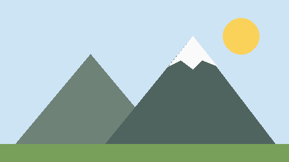

Calendario de rutas
Todas las salidas son el sábado a las 8:00 desde la puerta del club
Todas las salidas son el sábado a las 8:00 desde la puerta del club

Comprueba siempre la previsión de la AEMET la noche anterior
Publicada el 25 de obtubre de 2026
Treinta y dos socios completamos la ruta pese a la niebla. Repetiremos en primavera, cuando se vea el paisaje kárstico
Escríbenos a info@penasblancas.es
Federados en la FADMES(web de la federacion)